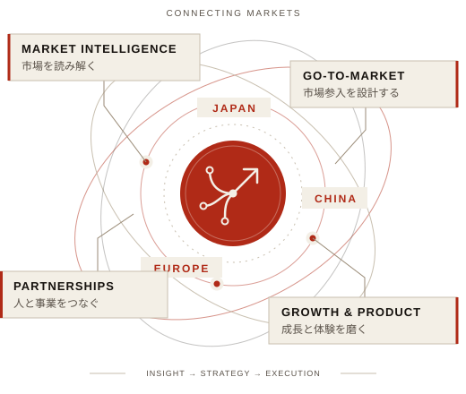

100M+
月間動画再生数
C CHANNEL 中国市場｜3か月で目標の200%
リサーチからGTM戦略、事業開発、パートナーシップ、成長実行まで。日本・中国・欧州をつなぎ、企業の新市場進出と成長を推進します。
実績を見る ↓
異なる市場を理解する。顧客の課題を見つける。戦略を設計する。そして、顧客獲得と事業成果までつなげる。
私のキャリアは、マーケットリサーチ、事業開発、マーケティング、プロダクト体験を横断しながら、この一連の流れを実行してきた経験です。
市場・競合・顧客インサイトを読み解き、意思決定につながる仮説と戦略へ。
市場参入の設計からアウトバウンド、顧客開拓、現地パートナー連携まで。
データ、コンテンツ、UI/UXを横断し、ユーザー体験と事業成果を改善。
課題、打ち手、成果。キャリアの中から、強みを最もよく表す4つのケースを紹介します。
現地の消費者インサイトとパートナー戦略を組み合わせ、NetEase・Weiboとの連携を推進。3か月で月間動画再生数1億回（目標の200%）、8か月でWeiboフォロワー70万人以上を獲得。
アクセス解析とユーザー行動をもとにUI/UXのボトルネックを特定。コンテンツ改善を通じて3か月で直帰率37%削減・PV184%増加、広告主向け提案により6か月で関連売上約140%増加。
アジア市場向けリサーチ・GTM支援事業を自ら企画し、テストマーケティングから事業化までを主導。年商100億円規模以上の企業を複数社開拓し、顧客開拓と調査の標準業務手順を構築。
数億円規模のプロモーション予算を管理。データ分析、UI/UX改善、クリエイティブ最適化を通じて、APACのユーザー獲得効率を改善。
中国市場の分析、法人顧客の新規開拓、投資回収分析。市場に入り、顧客と直接向き合う実務からキャリアをスタート。
定性・定量調査、競合分析、新規事業リサーチ、KPI設計、UX改善と収益化。データを具体的な成長施策へ変換。
中国の消費者インサイトを起点に、日本企業の開拓と現地パートナー連携を推進。NetEase・Weiboとの連携を通じて事業を拡大。
APACのデジタルマーケティング、大規模予算管理、CPA改善に加え、クラウドファンディングプラットフォームのWeb・UI/UXをディレクション。
日本・中国市場のGTM、アウトバウンド、エンタープライズ開拓、欧州企業とのパートナーシップ、リサーチから納品までのプロジェクトを推進。
戦略や提案にとどまらず、アイデアをプロダクトに落とし込み、実際に使える形にすることにも取り組んでいます。
Notionの表示を自分らしく整えるためのブラウザ拡張機能。テキストと画面配色のカスタマイズに加え、英語・日本語・韓国語・中国語（簡体字／繁体字）に対応したフォントを選択可能。不要なUI要素を非表示にし、集中できるワークスペースをつくります。
中国・海外の動画プラットフォームを横断して収集・整理・比較分析する、マーケティングエージェンシーのGTM業務を見据えた独立プラットフォーム。小红书、Bilibili、TikTok／Douyin、YouTubeを一元化し、リサーチ、競合把握、コンテンツ企画の判断を支援します。
クロスボーダーの課題に向き合い、パートナーやコンテンツ、プロダクトを通じて新しい接点をつくるプロジェクト。
中国の製造現場と海外の輸入業者・メーカーの間に立ち、国境を越えたビジネス接点をつくるプロジェクト。市場理解とパートナー開拓の経験を活かし、双方が協業機会を見つけやすい関係づくりを目指します。
小紅書・Bilibili・YouTube・微信公众号を通じて、取材や市場に関する知見を動画と投稿で届けています。
日本の人材紹介サービスの担当者に、中国語人材への採用ニーズと、求められる職種について聞きました。
インタビューを見るJAPAN · CHINA · EUROPE
上海・東京・ドイツを行き来し、アジアと欧州の交点から、まだ理解されていない市場に入る企業を支援しています。
LANGUAGES